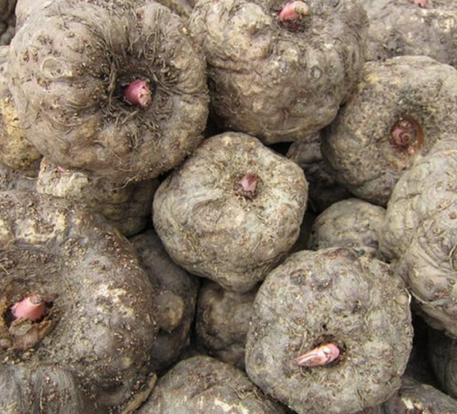
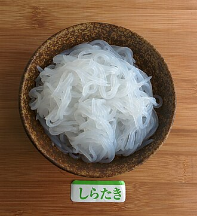

Bark to Bowl: How the Chinese Innovated during Famine
When most people think of Chinese noodles, they imagine yellowish, stretchy dough in long strands or steaming bowls of wheat noodles glistening with Lao Gan Ma sauce. But the history of Chinese noodles isn't only a story of a classic dish, but also one of survival. During periods of famine throughout Chinese history, people learned to transform inedible ingredients into noodles. Today, these same innovations could offer insight into modern food security problems.
Through centuries of droughts, floods, war, and food shortages, the Chinese were forced to reclassify what was edible and inedible. Wheat and rice were not always available to grow or eat. As a result, people began experimenting with whatever starches they could find. Although tree bark, wild roots, and wild plants aren't what come to mind when ordering takeout, these sources that might normally be ignored, or are even poisonous, became raw materials for sustenance. With enough washing, grinding, and cooking, these ingredients could be transformed into noodles.
One historical example comes from northern China, where people turned tree bark into flour. According to a report from China.org.cn (1), during severe food shortages in the mid-20th century, "farmers in the north peeled off the hard outer bark of elm trees and harvested the cambium inside," drying and grinding it into a powder before mixing it with corn or wheat flour to make noodles. The result was often "difficult to chew and digest" and "by no means delicious," but it was enough for survival. One farmer recalled, "There were nine siblings in my family. We always felt hungry. The elm tree bark noodles helped us get through the toughest days."

Another plant that was noodle-fied is konjac, a root native to East Asia. In its bare root form, konjac contains toxic compounds and cannot be eaten safely without preparation. However, over generations, people discovered methods to process the plant, removing harmful elements and transforming it into gelatinous foods. Today, konjac is widely used to make noodles, rice, and fruit jelly.
According to Sun Jiahui, a writer in The World of Chinese (2), konjac's history stretches back thousands of years. Ancient agricultural texts recommended it as a survival food. As one passage cited in The World of Chinese says, "Among methods for surviving famine, the mountains offer benefits like kudzu, konjac, and acorns-these are truly beneficial to the people." The article describes konjac as "a poisonous ancient plant" that somehow "has become the country's favorite crunchy, stimulating snack." The transformation from a toxic root to a popular ingredient reflects generations of experimentation and culinary innovation.


For many families, these improvised foods were deeply tied to hardship. Autumn, a Chinese immigrant who grew up eating konjac during times of scarcity, recalled that even these noodles were not abundant: "It was never enough to make you full... You were lucky to even eat the noodles at all." She explained that her family could only eat them once every one to two weeks, emphasizing how limited food access was.
Preparing konjac required extensive trial, patience, and knowledge. Autumn described the process: "You would need to first wash it, and then peel it... It would numb your hands if you touched it too much." The root had to be repeatedly washed, boiled, treated, and ground before it was safe to eat. This process shows that survival foods were not simply discovered, but carefully refined through repeated experimentation.
What used to be a desperate solution has now become part of everyday meals. Today, konjac is sold in grocery stores as low-calorie noodles, snacks, and dietary foods. This transformation reflects a broader pattern: foods created from scarcity can later become health-conscious or environmentally friendly options. In modern society, konjac is no longer associated with hunger but with wellness and sustainability.
This reality is still seen in the world today. While some regions experience food abundance, others still face famine and instability. Zhong, a professor in China who grew up in village life, noted that foods like konjac could become important again: "Definitely, these are pretty simple ingredient-wise and very versatile."
When asked about other nonstandard food sources like crickets or lab-grown beef, Zhong replied, "If people have food or have shortages, then these will likely have to be parts of our diet. And it's a real possibility with all the wars and stuff. Current society might have apprehensions against eating foods like bugs, but during a famine, they will eat anything, and it could become a main food source." Zhong's comment shows a growing awareness that global food production is uneven and unsustainable, given the increasing population.
Thus, the story of tree bark and konjac is not just troubled history. It is a preview of how food evolves under pressure. Climate change, war, and population growth continue to threaten food security worldwide. The same ingenuity that once turned tree bark into noodles may be used again, whether through rediscovering traditional survival foods or developing new technologies.
Scraped tree bark might seem completely inedible and unrelated to a steaming bowl of noodles, but it sustained. These eccentric noodles are a reminder that food culture is often shaped by both adversity and abundance.
Today, Chinese noodles are celebrated around the world for their savory flavor profile and smooth slurping. But behind each bowl is a grim, quieter history. The noodle is not only a comfort food or a culinary art form. It is also a story of human resilience, showing that when resources run thin, survival can create meals never seen before.
http://www.china.org.cn/china/Off_the_Wire/2019-12/24/content_75545624.htm
https://www.theworldofchinese.com/2025/11/konjac-chinas-obsession-with-the-toxic-plant/
https://thomas-dubois.com/2021/07/31/elm-bark-noodles-%E6%A6%86%E7%9A%AE%E9%9D%A2/
https://www.konjacfoods.com/health/index.html